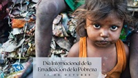

porblemas
La pobreza extrema: ocurre cuando una persona no cuenta con los recursos suficientes para cubrir necesidades basicas como alimentacion, agua potable, vivienda, salud y educacion
Causas: desempleo, bajos salarios, desigualdad social y falta de oportunidades.
Consecuencias: Desnutricion, enfermedades, exclusion social y menor calidad de vida.
Posibles soluciones: Programas sociales, acceso a la educacion, generacion de empleo y apoyo a comunidades vulnerables.

pobreza en latinoamerica
pobreza en México:La pobreza es un problema social que afecta a millones de personas en México. Muchas familias tienen dificultades para acceder a servicios básicos y oportunidades de desarrollo.Factores principales: Falta de empleo formal, bajos ingresos y desigualdad económica.Impacto: Limita el acceso a la educación, la salud y una vivienda digna.Importancia de combatirla: Reducir la pobreza mejora el bienestar social y favorece el crecimiento económico del país.

Pobreza infantil: La pobreza infantil afecta a niños y adolescentes que viven en condiciones económicas desfavorables.Consecuencias: Problemas de salud, abandono escolar y menores oportunidades en el futuro.Derechos afectados: Alimentación, educación, vivienda y atención médica.Acciones necesarias: Apoyo gubernamental, programas educativos y acceso a servicios básicos de calidad.